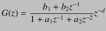
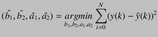
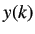
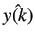
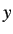

Next: Determination of First order Up: PRBS Modeling and Implementation Previous: Conducting PRBS Test on
System identification is carried out to identify the transfer function between the input signal to the system and output from the system. Firstly, a transfer function with unknown parameters is assumed. The system is given a known input and its response is obtained and then the values of the unknown parameters is chosen such that the sum of squares of the errors is minimized. Here, the error is the difference between the actual output and the output predicted by the transfer function model assumed. For the given SBHS system, we assume a second order transfer function:
|  | (7.1) |
The unknown parameters
 and are to be obtained through the response of the system to the known inputs.
and are to be obtained through the response of the system to the known inputs.
 are real numbers and is the plant delay which is an integer. For these model parameters estimation, we
use a pseudo random binary sequence (PRBS) input. Since the optimization over discrete variables ( in this case) is a very
difficult routine for computers, we assume a value for and then optimize over
are real numbers and is the plant delay which is an integer. For these model parameters estimation, we
use a pseudo random binary sequence (PRBS) input. Since the optimization over discrete variables ( in this case) is a very
difficult routine for computers, we assume a value for and then optimize over
 . The optimization
problem, then, becomes:
. The optimization
problem, then, becomes:
|  | (7.2) |
Here,  is the output obtained from the system- so it is known.  is the estimated output using  the model assumed, which can be written as a difference equation:
| (7.3) |